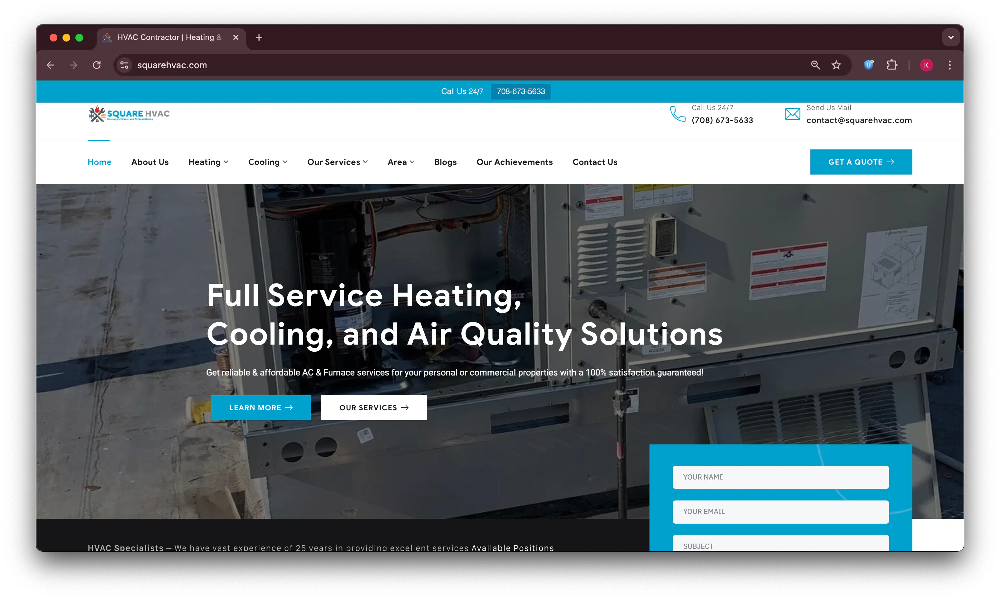

WordPress Developer in Faisalabad: Building Custom, Fast, Mobile-Friendly Sites
I'm Abdullah Zafar, a WordPress developer in Faisalabad. I build custom WordPress sites for shops, clinics, academies, and textile businesses across the city. My focus is simple. Every site should load fast, work well on mobile, and turn visitors into calls, leads, and sales.
Get a Free Quote
Tell me about your business and I'll reply within 24 hours with a clear, specific number.
Thanks, that's in!
I'll reply on WhatsApp or email within 24 hours with a clear, honest quote.
Whether you run a clinic near Peoples Colony or a wholesale business out of Karkhana Bazaar, a WordPress site gives you full control over your content. You are not locked into one platform or one developer forever.
Why WordPress for Your Business
WordPress powers more than 40% of all websites worldwide, according to W3Techs. That is not an accident. It gives you a flexible content system, strong SEO foundations, and a website you actually own, instead of renting space on someone else's platform.
For clinics, academies, and textile or retail businesses in Faisalabad, WordPress makes it easy to update pages, prices, and offers without needing a developer for every small change. My work covers WordPress design, WooCommerce, speed, security, customization, and ongoing support.
I don't recommend WordPress for every project. Shopify can be simpler for a small, straightforward online store, while WordPress is better when a business needs regular content updates, service pages, blogs, and room to grow. For simple one-page sites or unusual projects, a custom build may be the better choice.

WordPress Development Services in Faisalabad
Everything under one roof, so you're not juggling separate people for design, SEO, and upkeep.
Custom WordPress Website Development
Every site starts from a clean build, not a bloated theme full of features you will never use. I use custom post types and clean code structure, so the site stays fast and easy to manage as your business grows and your content needs change.
WordPress Website Design
If you already have a design in Figma or a brand style you want to follow, I turn that into a working WordPress site. If you don't have a design yet, I build a clean, modern layout around your business and your actual customers.
WordPress E-Commerce (WooCommerce) Development Faisalabad
For textile sellers and retail brands, I set up WooCommerce stores with product pages, payment options, and shipping rules that match how you actually sell — local delivery, cash on delivery, or online card payments.
WordPress Service Website
For clinics, academies, and service businesses, the goal is inquiries, not just page views. I build clear layouts with strong calls to action, contact forms, and WhatsApp click to chat, along with the basic local SEO setup every service page needs.
WordPress Portfolio Website
For consultants, designers, and agencies, I build portfolio sites with fast image galleries and clean project pages that load quickly even on a slower mobile connection.
WordPress Blog Development
A blog built the right way helps you rank for more searches over time, not just your main service keywords. I set up clean categories, internal links, and article structure for both search engines and readers.
WordPress SEO in Faisalabad
Every site I build includes on-page SEO from day one — proper titles, meta descriptions, headings, and a technical setup using RankMath or Yoast, built around how your actual customers search.
WordPress Speed Optimization & Core Web Vitals
Slow sites lose visitors and lose rankings. I work on load time, image size, and caching to improve your Core Web Vitals scores — the same metrics Google uses to judge page performance.
WordPress Maintenance and Support
After launch, sites still need care. I handle updates, backups, and security checks, so your site stays safe and working properly, without you needing to think about the technical side at all.
My WordPress Development Process
Discovery and Requirements
We talk through your business, your goals, and which pages you actually need before anything gets built.
Design and Layout Approval
I share a layout or design draft for your approval, so you know exactly what you're getting.
Development and Content Integration
I build the site on WordPress, add your content, and set up your forms, WhatsApp button, and analytics.
Testing and Launch
I test the site across different devices, connect your domain and hosting, and take it live.
Training and Ongoing Support
I show you how to update your own content, then stay available for fixes and small changes after launch.

WordPress Website Cost in Faisalabad
Here are typical price ranges. Your exact quote depends on the number of pages, design complexity, integrations, and how ready your content already is.
A simple site with a few pages, a contact form, and basic SEO built in.
More pages, custom design work, and added features like galleries or booking forms.
Fully custom design, advanced features, and integrations built specifically around your business.
Full product setup, payment options, and everything needed to sell online properly.
I'll give you a clear, specific number after a short conversation, once I understand what you actually need. Your exact price depends on your pages, features, and design complexity. These are service charges for my work — domain and hosting are usually arranged by the client; if you don't have these yet, I can purchase them on your behalf, billed separately at cost.
A website's return depends on your offer, your traffic, and how well it converts. I won't promise a specific outcome. My goal is a site that gives your customers a clear way to call, message, or buy.

WordPress Developer vs Agency in Faisalabad
Agencies come with account managers and extra layers of communication built into every quote. Working directly with me cuts that layer out entirely.
| Criteria | Working With Me | Typical Agency |
|---|---|---|
| Who builds your site | Me, directly | A team you rarely speak to |
| Communication | Direct, no account manager (WhatsApp/Call) | Passed through account management |
| Pricing | Reflects the actual work | Includes office overhead and management layers |
| Focus | WordPress and WooCommerce specifically | Spread across many platforms and services |
| After launch, if something breaks | You message me directly for quick fixes | You submit a ticket and wait in queue |
Industries I Serve in Faisalabad
Clinics and Healthcare
A WordPress site gives your clinic appointment forms, a WhatsApp line, and clear service pages patients can check before they visit, whether you're near D Type Colony or anywhere else in the city. Doctor profiles and a simple list of services help a nervous first time patient decide to book.
Academies and Tuition Centers
Parents search online before enrolling their kids in a new academy. A WordPress site with course pages, fees, and an admission form helps you win that inquiry early, before a competitor does.
Textile and Garment Businesses
For sellers connected to Faisalabad's wholesale trade around the Factory Area, a WooCommerce catalog gives buyers, local or international, a real way to browse products and place an inquiry directly.
Retail Shops and Brands
A WordPress site with product photos, WhatsApp ordering, and clear hours helps customers find you even when your shop near D Ground is closed for the evening.
Real Estate Agents & Property Dealers
A custom WordPress site with property listings and strong inquiry forms puts you in front of buyers searching areas like Muhammad Abad and Peoples Colony, well before they ever call an agent.

Featured WordPress Projects
Real WordPress and WooCommerce builds from recent client projects.

Square HVAC
HVAC service website with local SEO strategy generating 708+ monthly organic visitors with fast mobile performance.

Pinnacle Law Firm
Professional legal website for a California-based practice specializing in ART and Entertainment Law, built for trust.
Tools and Technologies I Use
I build primarily with WordPress and the block editor, since it's lighter and loads faster than most page builders. I bring in Elementor when a client genuinely needs heavy visual control, custom sections, sliders, layouts that the block editor can't handle cleanly on its own.
For most business sites, I stay away from bulky multi-purpose themes like Kadence. They usually ship with far more code than a five or ten page business site will ever use, and that unused weight is a common reason WordPress sites end up loading slowly. A lighter theme with custom templates built around what the site actually needs tends to perform better from day one.
For online stores, I use WooCommerce. For SEO, I set up RankMath or Yoast, and I use caching plus Cloudflare to keep sites fast under real traffic. Beyond WordPress itself, I work comfortably with PHP, HTML, CSS, and JavaScript whenever a project needs custom functionality that a plugin alone can't handle.
Technologies I work with:

Security, Migration, and Multilingual Support
Beyond building new sites, I also handle the technical work that keeps existing WordPress sites running well.
Security & Malware Removal
WordPress is the most targeted CMS in the world simply because it is the most used. I harden new installs with proper file permissions and login protection, set up regular backups, and clean up hacked sites when needed, so your site stays protected against common attacks instead of becoming an easy target.
Migration and Redesign
If your current site is outdated, slow, or built on an old theme, I can migrate it to a new theme or a faster host with minimal downtime. Your content, URLs, and existing search rankings stay intact through the move, so you don't lose the visibility you already built.
Multilingual Sites
For businesses that need both Urdu and English, I set up multilingual WordPress sites using WPML or Polylang. This gives both audiences a proper native experience, with correctly translated menus and content, not a rough auto translate plugin bolted on afterward.
I also connect WordPress sites to payment gateways, CRMs, email marketing tools, booking systems, and other services your business already relies on, so your website works with your existing tools instead of replacing them.
About Abdullah Zafar, Web Developer in Faisalabad
I'm Abdullah Zafar, a web developer in Faisalabad, Pakistan with SEO expertise. I focus specifically on high-performing WordPress, WooCommerce, and custom web solutions built for search visibility, speed, and real business results.
I work with local Faisalabad businesses and clients internationally, building sites that are fast, easy to manage, and built around real business goals, not just good looks on launch day.

Frequently Asked Questions
The most common questions I get before a project kicks off. Don't see yours? Message me directly — I reply to every enquiry personally.
A basic site takes 1 to 2 weeks. A mid range or premium site takes 2 to 5 weeks, depending on pages and features. A WooCommerce store usually takes 2 to 4 weeks.
Usually, you arrange your own domain and hosting. If you don't have these yet, I can purchase and set them up for you, billed separately at cost, apart from my service charges. Either way, I handle the technical setup and connect everything at launch.
Yes. I show you how to edit pages, update content, and manage basic settings, so you're not stuck waiting on me for every small change.
Regular updates, backups, security checks, and small content changes. Bigger redesigns or new features get quoted separately from ongoing maintenance.
Yes. I set up WooCommerce stores for textile, retail, and other product based businesses, including payment setup, shipping rules, and product organization.
Yes. While I'm based in Faisalabad and this page is focused on local businesses, I also work with clients across Pakistan and internationally, including the UK, US, EU, and Australia.
Cost depends on the platform, number of pages, functionality, and design complexity. For Faisalabad clients specifically, basic sites usually start around PKR 20,000, with WooCommerce stores and premium builds costing more depending on features.
For most small businesses, yes. WordPress gives you an editable site without needing a developer for every small update, strong SEO support, and the flexibility to add an online store later without rebuilding from scratch.
Ready to Start Your WordPress Project?
Whether you need a new site, a WooCommerce store, or help fixing a slow WordPress install, I can help. As a WordPress developer in Faisalabad, I build sites made to bring in real calls, leads, and orders, not just page views.
I usually reply within 24 hours.